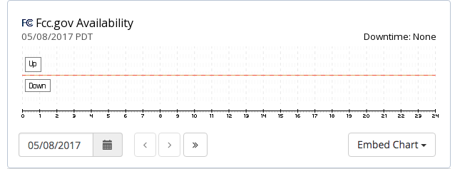
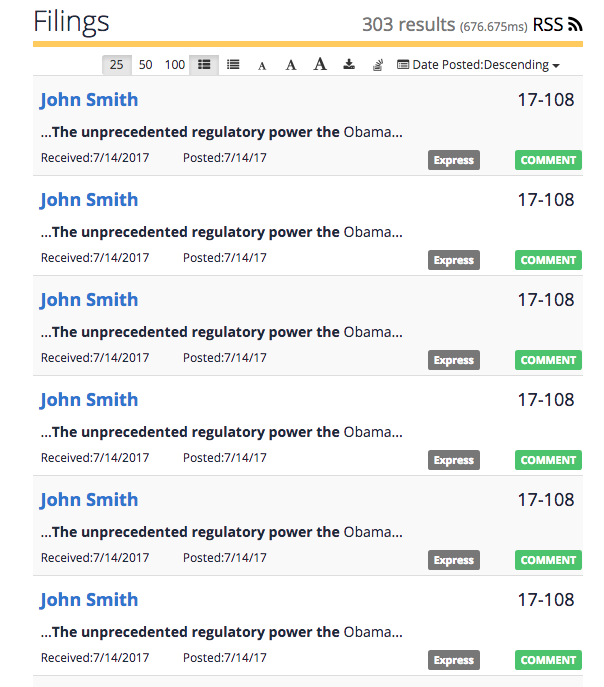
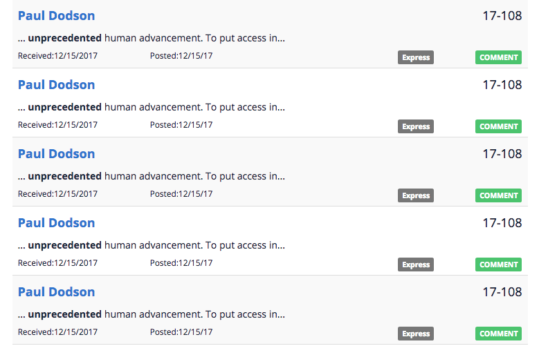

The FCC (Federal Communications Commission) received a DDoS attack immediately after John Oliver's episode in "Last Week Tonight" regarding net neutrality.
What is Net Neutrality,
Net neutrality is a list of rules that allow every internet user to have access to all the internet content. Without Net Neutrality, service providers like Comcast and Verizon can intentionally throttle the bandwidth of certain users or intentionally slow down specific websites/sources and ask you to pay more to be able to have access to faster internet speeds.
Net neutrality laws existed for a while but in this investigation we will focus on Ajit Pai. In 2017, Ajit Pai (Chairman of the FCC under the Trump Administration) wanted to change the net neutrality rules so they can be “modernized” to “match the reality of the modern marketplace”. The members of the FCC decided to move forward with Pai’s proposal and subsequently this caused a lot of criticism because if the net neutrality rules would be deregulated, then service providers which are private firms would have control over the internet and control who sees what content on it.
Back to Context,
John Oliver made an episode about Net Neutrality in which he encourages his viewers to visit the FCC website and comment why they need net neutrality. On the same day, the FCC website went down due to multiple DDoS attacks reporting that they were receiving more than 160 comments per minute. On top of that, the FCC claims that there is no documented analysis of the DDoS attack.
The fact that there is no documented analysis of the attack is rather shady. You would expect such a huge and important website to be more prepared and have an analysis when attacked by external actors.
What is true from what the FCC claims?
We will now take the shady parts and shine some light. David Bray, FCC's chief information officer said that the DDoS attacks were:
"deliberate attempts by external actors to bombard the FCC’s comment system with a high amount of traffic to our commercial cloud host."
But actually there weren't any external factors involved in the attack.

Fcc.gov availability chart by CurrentlyDown.com
As you can see there is no downtime on the day of the attack which means that the website was working perfectly. So since the CDN (Content Delivery Network) of the FCC site was not affected, the attack was internal and not external.
According to this news report, at midnight on the 7th May 2017, the FCC experienced the DDoS attack. Since then, there is a bot that posts anti net neutrality comments:

Here is the very long link to the comments
It looks like "John Smith" has posted 303 anti net neutrality comments (all of them with the same text) in total. At least 20 identical comments were posted by him on the 14th of May 2017.
This is another example of the same person posting the same text multiple times in one day:

Furthermore, there have been cases where the bot commented with names of people who have passed away
In the end it is not sure who is behind this bot but one possible answer is that the FCC itself developed the bot to post comments with people's names, addresses and zip codes without their consent. Then the FCC claimed that their website received a DDoS attack although that this is not true as I previously mentioned.
17/12/2017